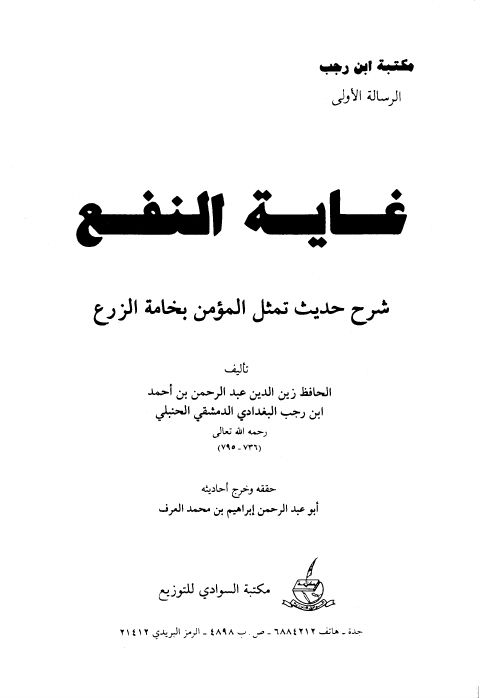
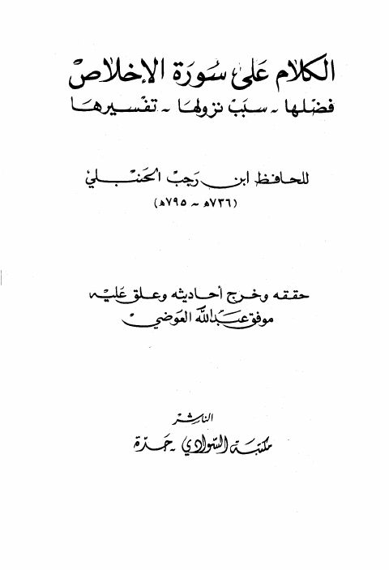
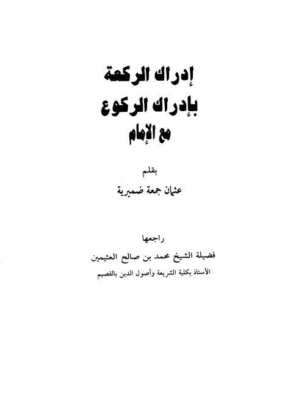

غاية النفع في شرح حديث تمثيل المؤمن بخامة الزرع غاية النفع في شرح حديث تمثيل المؤمن بخامة الزرع عبد الرحمن البغدادي بن رجب الحنبلي
الكلام على سورة الإخلاص فضلها، سبب نزولها، تفسيرها الكلام على سورة الإخلاص فضلها، سبب نزولها، تفسيرها ابن رجب الحنبلي
إدراك الركعة بإدراك الركوع مع الإمام إدراك الركعة بإدراك الركوع مع الإمام عثمان جمعة ضميرية